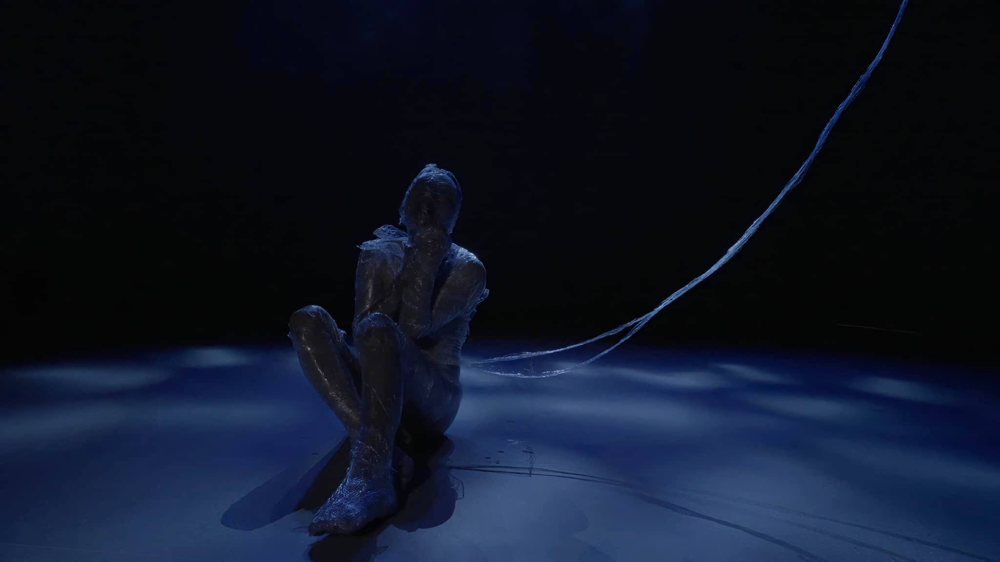
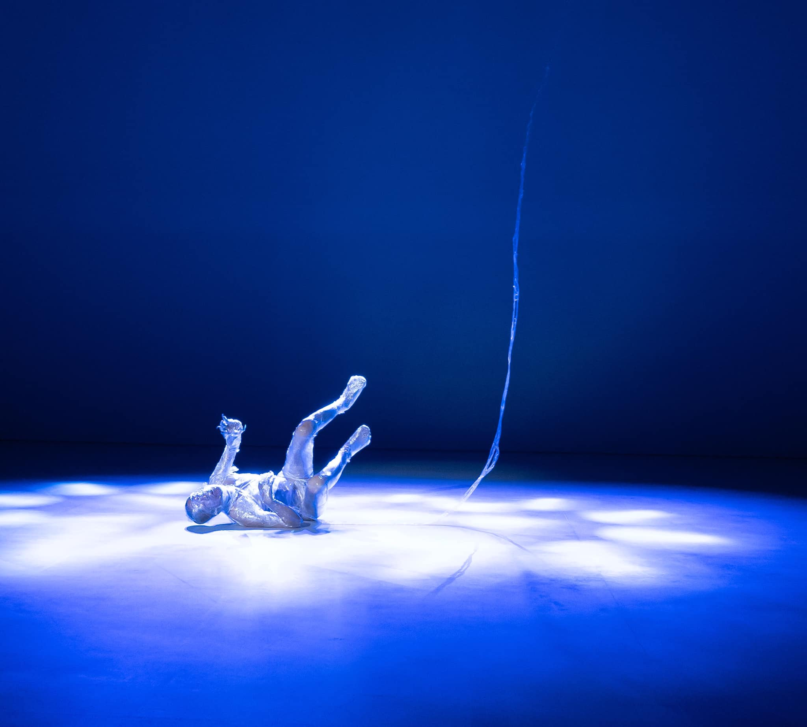
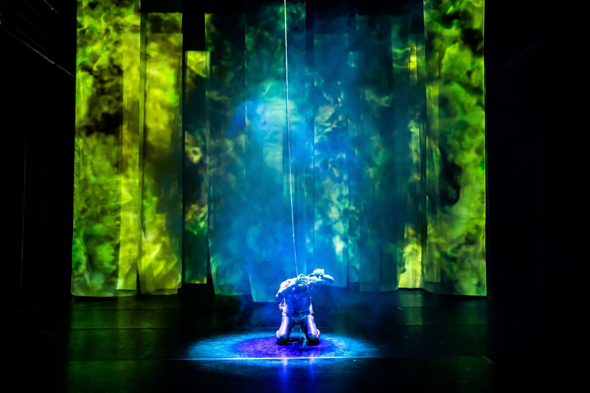

News
ARA KOREA 관련 기사·보도를 모았습니다. 카드를 클릭하면 원문으로 이동합니다.

제 20회 ARA KOREA 캠페인, 국립극장서 진행

ARA KOREA, 메타버스 가상 사옥 제작 “K-컬처 융복합 콘텐츠 기획”

홍장혁 AK ENM 디자이너, 영화감독으로 변신

캐나다 NGO단체 AMPKIND의 홍장혁 대표, "소외된 아이들을 위하여" 캠페인 진행

(기사) ARA KOREA 관련 보도

(기사) ARA KOREA 관련 보도
작곡가 안성희, 작품발표회 ‘우수주(宇受宙)’ 개최
AMPKIND, 헐리우드 배우에게 '독도 손수건' 증정 ...

독도 동영상 공모전 개최 안내문

올림픽에서 독도 수호 캠페인